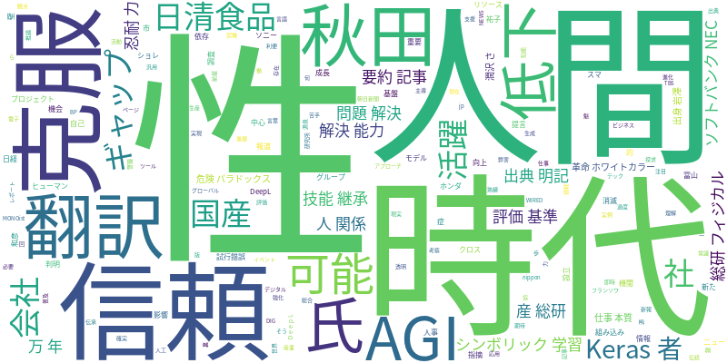

☁️ 今日のトレンドワード

📰 今日のピックアップニュース (10件)
Keras開発者、AGIへ「シンボリック学習」で挑戦
Kerasの開発者であるフランソワ・ショレ氏が、シンボリック学習という新たなアプローチで汎用人工知能（AGI）の実現を目指しています。これは、現在のAIが苦手とする推論や常識理解の克服を期待させるものです。
AI依存症で人間の忍耐力低下、問題解決能力も影響
AIの過度な利用が人間の忍耐力を奪い、問題解決能力を低下させる可能性が指摘されています。AIによる即時的な解決は、試行錯誤を通じた自己成長の機会を奪いかねません。
日清食品、AI時代の人事評価基準を提言
日清食品は、AIが普及する時代において、AIを単なるツールではなく「ヒューマンリソース」と捉え、新たな人事評価基準の必要性を提言しています。人間とAIの協働を前提とした評価が求められます。
AI要約記事の信頼性、出典明記が鍵
スマニューの調査によると、AIが生成した要約記事の信頼性を高めるには、出典の明記と信頼できる報道機関からの情報であることが重要だと判明しました。透明性と情報源の確実性が求められます。
技能継承とAI、人とAIの関係性を探る
本記事では、日本の伝統的な「技能継承」の観点から、人とAIがどのように関係を築いていくべきかを探求しています。AIの活用が、熟練技術の伝承にどのような影響を与えるか考察します。
産総研「フィジカルAI」、10万年ギャップ克服へ
産業技術総合研究所（産総研）のフィジカルAIプロジェクトは、現実世界でのAIの応用を目指し、10万年とも言われる進化のギャップを埋めようとしています。組み込み技術の進展に注目が集まります。
国産AI開発へ新会社、ソフトバンク・NECら4社が主導
ソフトバンク、NEC、ホンダ、ソニーグループの4社などが中心となり、国産AI基盤モデル開発を目指す新会社が設立されました。日本のAI開発力強化に向けた重要な一歩です。
AI革命でホワイトカラー消滅？仕事の本質を問う
AI革命がホワイトカラーの仕事を奪う可能性について、冨山和彦氏が警鐘を鳴らしています。AI時代において、人間の仕事の本質とは何か、改めて問い直す契機となりそうです。
AI翻訳DeepLで活躍、秋田出身の岩澤さん
秋田市出身の岩澤祐子さんが、AI翻訳サービス「DeepL」を活用して活躍しています。AI翻訳が言語の壁を克服し、グローバルな活動を支援する実例を示しています。
AIによる“潤沢さ”の危険なパラドックス
AIがもたらすとされる「潤沢さ」の裏には、危険なパラドックスが存在する可能性が指摘されています。AIによる生産性向上や利便性の向上は、思わぬ弊害をもたらすかもしれません。
今日のAI・テック業界は、AGI（汎用人工知能）への挑戦、AI依存による人間能力への影響、そしてAI時代における新しい人事評価基準の模索など、多岐にわたる議論が展開されています。Keras開発者によるシンボリック学習への試みは、AIの推論能力向上への期待を高めます。一方、AIによる忍耐力や問題解決能力の低下、そしてホワイトカラーの仕事への影響といった懸念も浮上しており、AIと人間との健全な共存関係の築き方が問われています。また、国産AI基盤モデル開発に向けた国内企業の連携は、技術競争力の強化を目指す動きとして注目されます。AI要約記事の信頼性向上には出典明記が不可欠という指摘や、技能継承といった伝統的なテーマとの関連性、そしてAIがもたらす「潤沢さ」の裏に潜むパラドックスなど、AIの社会実装における多様な側面が浮き彫りになっています。